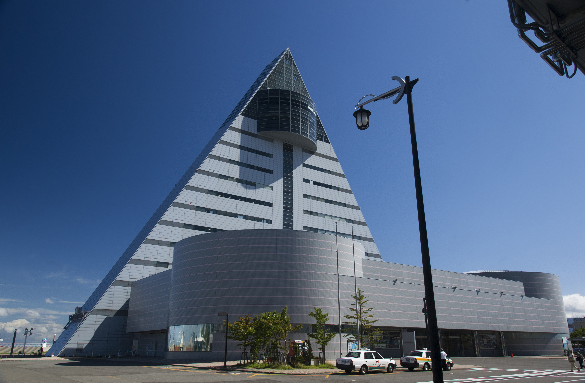

青森から学ぼう！
みなさん、こんにちは！青森市といえば、何を思い浮かべますか？
ねぶた祭り、りんご、そして日本海と津軽海峡が広がる美しい景色…。この土地には、自然や歴史、文化がたくさん詰まっています！
そんな青森市で学ぶみなさんのために、この教材では わかりやすく、楽しい学び をお届けします。
青森の魅力を感じながら、新しい知識を一緒に増やしていきましょう！
ツールチップを導入しています。
観光地

十和田湖
十和田湖は、約20万年前に始まった火山活動により形成された陥没に長い年月をかけて雨水が貯まってできた。十和田湖ではカヌーを楽しむことができて、十和田湖と繋がる奥入瀬渓流では付近を散策することができる。
青森県観光物産館アスパム

1階は、名産品や特産品などを販売している。2階では、360度パノラマの3Dデジタル映像でねぶた祭を見ることができるシアターがあり、伝統工芸品「津軽こぎん刺し」の制作実演コーナーがある。
お祭り

青森ねぶた祭
東北三大祭りの１つで国の重要無形民俗文化財に指定されている。ねぶたに続けて跳人が「ラッセラー」と掛け声を上げながら踊り歩く。
ねぶたの家ワ・ラッセ
2階まで吹き抜けたスペースに毎年、祭り本番に出陣した大型ねぶたや触ることができるパーツねぶたなどが展示されている。

歴史

三内丸山遺跡
縄文時代前期から中期の大規模な集落跡があり、多数の土器や石器、貴重な木製品や骨角製品などが見つかった遺跡。
食べ物
青森りんご
米国宣教師ジョン・イング師が持ってきた西洋りんごの苗木を青森県に植えたのが始まり。